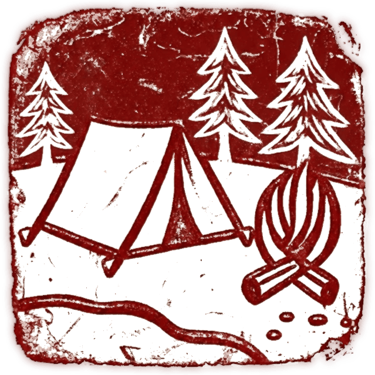

Foundations for survival Minecraft
- Deepslate Age
- The Price of Light
- Industrial Refinement
- Earned Rest
- Dynamic Hostility

Foundations is a minimalist survival overhaul built to bring beta's deliberate friction back to your playthroughs.
Instead of cluttering your game "fixing Minecraft", it surgically tweaks 5 core mechanics to restore weight, danger, and consequence to the world:- Light is no longer free.
- Progression demands prolonged cave exploration.
- Progression hardens the world.
DOWNLOAD
- Guide